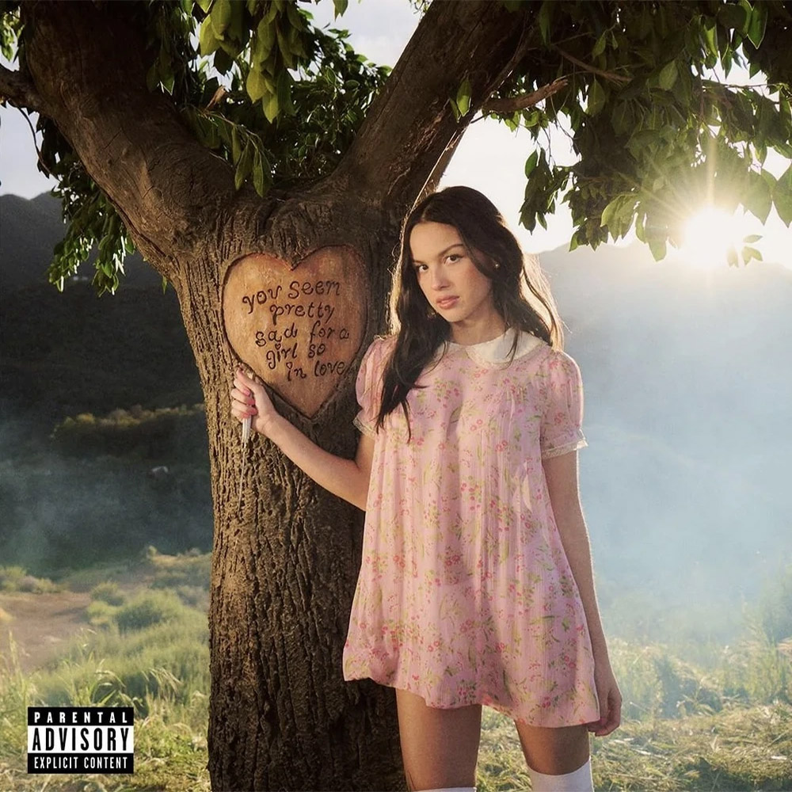
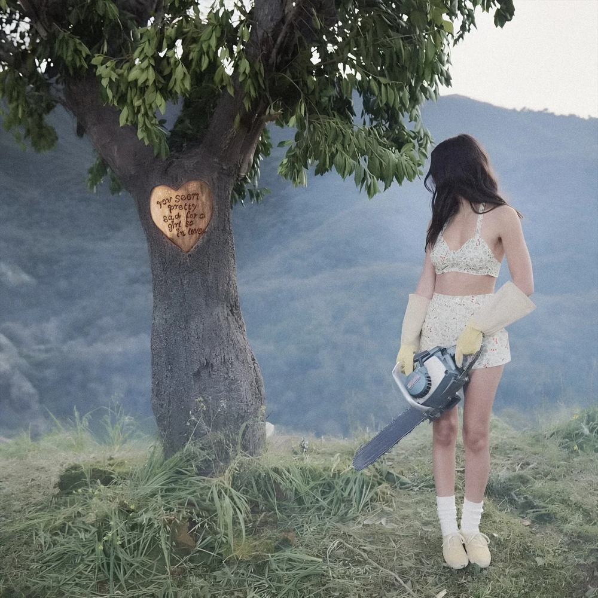
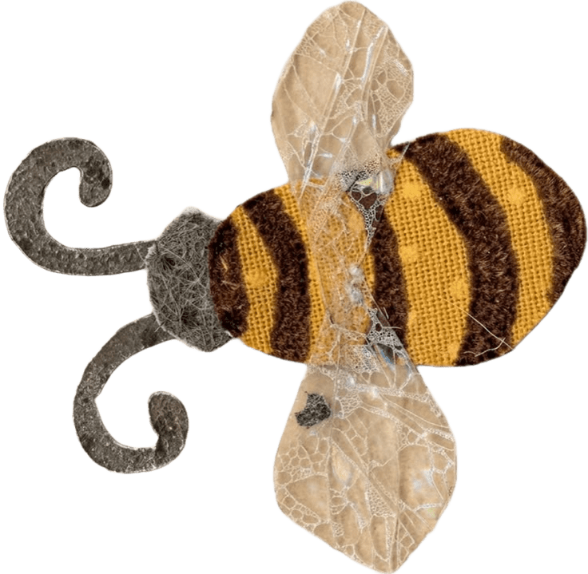
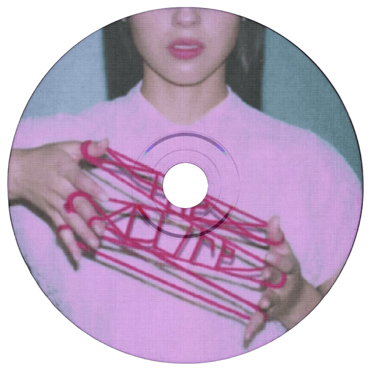
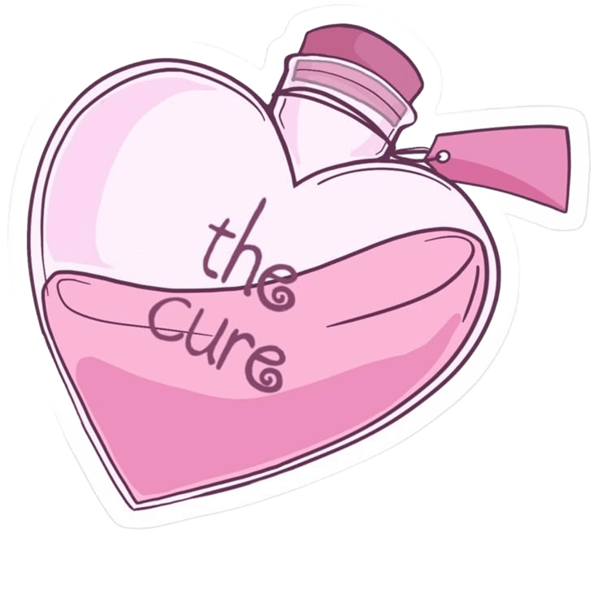
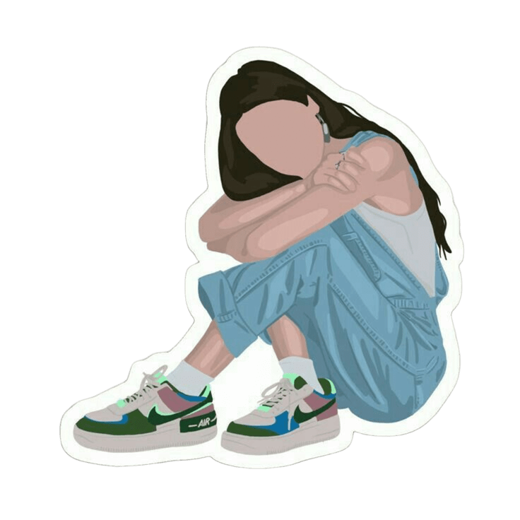
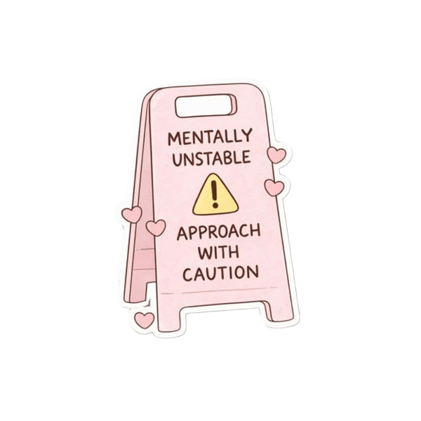

˚˖𓍢ִ໋❀you seem pretty sad for a girl so in love❀˚˖
O que é o you seem pretty sad for a girl so in love?
O terceiro álbum lançado por Olivia Rodrigo se intitula "you seem pretty sad for a girl so in love" ou traduzindo "você parece meio triste para uma garota tão apaixonada". Lançado no dia 12 de junho de 2026, o álbum pode ser considerado como uma cápsula do tempo de seu relacionamento com Louis Partridge. O álbum é dividido em duas partes notoriamente diferentes: A primeira metade do álbum são músicas de amor e consideravelmente mais animadas, sendo esse o trecho que provavelmente ela ainda estava com ele, porém por volta da sétima faixa as músicas se tornam mais melancólicas. Neste álbum, podemos perceber a mudança de ponto de vista da cantora sobre seu ex-parceiro, onde no início ela estava apaixonada e contente com ele, já na segunda metade podemos ver que ela adquire um "rancor" dele.
Este álbum possui diversos tipos de estilos musicais, podemos citar estilos como dream pop, new wave, pop rock e synth-pop, todos derivados do estilo rock dos anos 1960 a 1970 com uma mistura de pop.
"É assustador ... pensar: 'É isso que tenho vivenciado, é nisso que tenho pensado'. É uma experiência muito singular ser tão pessoal em uma escala tão grande. Mas eu adoro, acho que é por isso que amo tanto compor músicas, porque consigo processar isso para mim mesma e, assim, talvez ajudar outras pessoas a processarem e sentirem o mesmo. ... Eu estaria mentindo se dissesse que é tipo: 'Nossa, isso parece totalmente normal e intuitivo'. Mas ... a música deve ser divertida e bonita, e deve ser uma experiência que traga alegria às pessoas. Se estressar demais com isso não ajuda muito." - Diz Olivia durante a composição e lançamento do álbum.


Músicas
O álbum consiste em 13 faixas (Algumas faixas serão explicadas mais abaixo), sendo elas:
- drop dead
- stupid song
- honeybee
- maggots for brains
- u + me = <3
- my way
- purple
- the cure
- begged
- what's wrong with me
- less
- expectations
- cigarette smoke
˚˖𓍢ִ໋❀músicas❀˚˖
drop dead
"drop dead" ou "cair morta" foi a primeira faixa revelada do álbum, lançada no dia 17 de abril de 2026, "drop dead" é uma expressão de duplo sentido, podendo ser uma forma rude de se afastar de alguém ou de "morrer" perto de um crush. A música fala sobre a intensidade de ter um crush na adolescência, através de situações como stalkear a pessoa na Internet ou imaginar cenários românticos com a pessoa, mas que no fim, revela uma certa insegurança ao perceber que a pessoa é perfeita demais, vemos isso no trecho onde ela diz: "You're so, so pretty, boy; I'm paranoid I made you up". O videoclipe mostra a cantora em Versalhes, trazendo-a como uma versão atual de Maria Antonieta, reforçando o exagero romântico.
stupid song
"stupid song" ou "música estupida" é uma música sobre a intensidade do amor e seu potencial de se tornar caótico. No trecho do refrão: "And I want you more than any stupid song could ever say" é apresentado para nós essa intensidade ao dizer que nenhuma música consegue expressar tal paixão, porém ela também diz “honest love is a cage that makes you feel free”, dizendo que o amor é uma gaiola que dá sensação de liberdade, reforçando a dualidade entre a liberdade e a falta dela.

honeybee
"honeybee" é um termo utilizado para se referir a alguém de forma carinhosa, dizendo que a pessoa é doce como mel. "honeybee" é uma canção de amor que Olivia diz ser o cenário perfeito para se encontrar com um parceiro, a música retrata eventos como caminhar no escuro, ir para casa juntos entre outros. A música tem um ritmo calmo e destaca a sensação de segurança e pertencimento que a pessoa amada dá.

maggots for brains
"maggots for brains" ou traduzindo "larvas pelo cérebro" é a quarta faixa do álbum que, apesar de seu ritmo animado e fazer parte do trecho do álbum no qual Olivia ainda estava com Louis ela fala de algo preocupante, a dependência emocional. Durante a música Olivia faz uma metáfora, repetindo várias vezes que é um zumbi e que o mundo parece sem cor quando Louis vai embora. Isso retrata que o amor e a falta dele deixasse sua mente confusa e apática.
u + me = <3
"u + me = <3" se traduz para "eu + você = <3" , com o símbolo "<3" representando um coração, sendo uma ironia da cantora para representar a linguagem simplificada utilizado pelos adolescentes atualmente. A música é praticamente uma coletânea de eventos clichês de romances jovens, como conversar no telefone e gravar o nome no banco de couro, simbolizando a eternidade de um relacionamento, mas que no fim pode significar a ingenuidade e exagero. A música dá destaque ao romantismo impulsivo e imperfeito, mostrando a preferência de viver uma paixão sem medo do julgamento, tudo isso com um ritmo extremamente animado e uma letra mesquinha e fofa.
my way
"my way" ou "meu caminho", apesar de estar na parte apaixonada e alegre do álbum, é carregada de ódio e ciúme. A música se refere a uma garota que estaria no caminho de Olivia, atrapalhando seu relacionamento com Louis, teorias dizem ser a ex dele, Sydney Chandler, apesar de nada confirmado por parte da cantora. A música indica que Olivia se estressa com as ações de tal menina e com a sua persistência, além de mostrar um tom debochado e direto para ela, Olivia na música assume o papel de "vilã" para torná-la mais sarcástica e cômica.

purple
Roxo foi sempre a cor assinatura da Olivia Rodrigo, onde basicamente toda a estética de seus álbuns antigos eram um roxo claro no SOUR e um escuro no GUTS. Apesar de estar menos presente neste álbum, Olivia dedicou o título de uma faixa inteira para essa cor. "purple" é a música de virada do álbum, onde as músicas se entristecem e o relacionamento começa a ruir. No início a música é fofa, relatando sua experiência conhecendo Louis e como isso evoluiu. O refrão da música diz: “And I melt with you, your red and my blue ;Now I see the world in purple” indica como o relacionamento mudou sua visão do mundo, porém no fim da faixa ela diz: "Melt with you till it all turns black", reforçando essa ideia de derreter em Louis, porém aqui o preto pode tanto significar o amor intenso como a tristeza e o vazio que o relacionamento se tornou.
the cure
"the cure" se traduz para "a cura", inspirado no nome da banda favorita de Louis. "the cure" foi a segunda faixa de prévia do álbum, lançando no dia 22 de maio de 2026, ela é a música com mais visualizações desse álbum e foi indicada ao Grammy de 2027. "the cure" fala sobre a tentativa de procurar uma solução para suas inseguranças em um relacionamento, mas percebendo que nenhum relacionamento vai ser a cura definitiva. Na música é usado muito o termo "unraveled" que traduzindo para o sentido literal significa "desembaraçar" (Que foi utilizado no clipe ao sair fios de lã de Olivia) como "desmoronar", que é o que estava ocorrendo com ela e seu relacionamento.


begged
"begged" ou "implorei" é uma música onde Olivia expõe a sensação de insuficiência presente em seu relacionamento, apontando que "nada é suficiente quando eu sei que, para eu conseguir eu implorei", além de falar da necessidade de clareza e reciprocidade no relacionamento. A canção usa de metáforas para representar a sensação de estar presa ao relacionamento, que sua esperança está desaparecendo e sobre parecer esperar pela sorte para reviver seu amor.
what's wrong with me
Na música "what's wrong with me" ou "o que tem de errado comigo", Olivia transforma sentimentos negativos da dor de um relacionamento como sintomas de uma doença, ela relata investigar a origem deles e falhando miseravelmente. A letra mostra não só essa decepção como sugere que esse desconforto físico está ligado ao seu relacionamento com Louis, e que isso realmente está a prejudicando. A música também tem a participação do cantor da banda The Cure, Robert Smith, que também é comumente associado a músicas melancólicas.

less
"less" ou "menos" é considerada por analistas a faixa em que o relacionamento entre Olivia e Louis se encerra. A canção fala sobre a dor de um fim de um relacionamento por distanciamento entre um e outro, além da saudade dos momentos bons e o medo do final. Podemos ver a tentativa dos dois de manter o relacionamento, fazendo viagens que fizeram antigamente, porém nada parece funcionar. Um detalhe importante da música é que por volta do meio da faixa, os versos da música começam a ser escritos apenas no passado, indicando que o relacionamento acabou. Essa música revela que demonstrar maturidade e amor em um relacionamento que está acabando é deixando a pessoa partir, mesmo que isso te machuque, vemos isso no trecho: "If loving me means letting go and wishing me the best; Well, then I guess; I wish, I wish, I wish you loved me less".

expectations
"expectations" ou "expectativas" é a música do pós-término de Olivia, a música fala muito sobre autovalorização, onde ela utilizou seus relacionamentos passados de lição para ela finalmente criar o senso de que ela não precisa ficar com garotos que não atendam suas expectativas iniciais ou que sejam muito inseguros e com falta de iniciativas. Essa música, ao contrário do resto da parte triste do álbum, é extremamente animada, com estilos musicais como synth-pop.
cigarette smoke
"cigarette smoke" ou "fumaça de cigarro" é a última faixa do álbum "you seem pretty sad for a girl so in love", que fala mais sobre as mágoas após o término e como seu ponto de vista mudou sobre Louis. O próprio título da música faz uma metáfora a algo que gruda nas suas roupas, reforçando essa ideia de mágoas carregadas. Olivia na música expõe também a dor de sofrer um amor unilateral e o desejo de sentir algo honesto ao invés de memórias idealizadas. Por fim, ela fala “It's bone-dry, bitter and hollow; You'll be miles away tomorrow”, reforça a honestidade que Olivia aborda do fim de seu amor com Louis.